Guiding the Institute's research direction and academic rigour across neuroscience, AI, philosophy, and complex systems.
32 Members
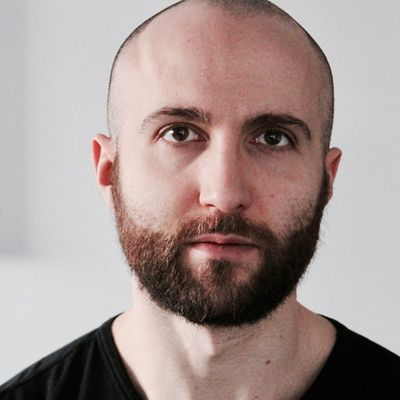
Independent Researcher
Adam Safron is an independent researcher focusing on models of consciousness, mechanisms of agency, psychedelics, artificial life, and AI alignment protocols. He currently works with Michael Levin at the Allen Discovery Center at Tufts University, and collaborates with the Institute for Advanced Consciousness Studies. His ultimate purpose is exploring how people can be adaptive, creative, and free in all aspects of their lives, both as individuals and communities.
adamsafron.com · Google Scholar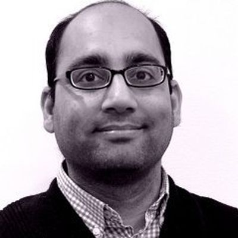
Professor, Monash University
Adeel Razi is a Professor and Principal Investigator of the Computational Neuroscience Laboratory at Monash University. His research vision is to develop next-generation generative models of how the brain functions through a multidisciplinary approach combining engineering, physics, and machine learning grounded in neurobiology. He applies active inference to inform the design of novel artificial neural networks, and uses computational modelling with psychedelics to explore altered states of consciousness.
adeelrazi.org · Google ScholarAssociate Professor, RIT
Alexander Ororbia is an Associate Professor of Computer Science and Cognitive Science at Rochester Institute of Technology, and founder and scientific director of the Neural Adaptive Computing (NAC) Laboratory. His research falls under computational neuroscience and brain-inspired computing, with a focus on the development and study of computational models of neuronal dynamics, synaptic plasticity, and active inference with applications in neurorobotic control. He holds a Ph.D. in Information Science and Technology from Penn State University.
cs.rit.edu/~ago · LinkedIn · Google ScholarResearcher
Ali Rahmjoo is a researcher contributing to the advancement of Active Inference and related computational frameworks. His work spans probabilistic modelling and its applications across cognitive and biological systems.
Google ScholarResearcher
Andrew Pashea is a researcher engaged with the Active Inference Institute, contributing to the development and application of Active Inference frameworks across interdisciplinary domains.
ORCID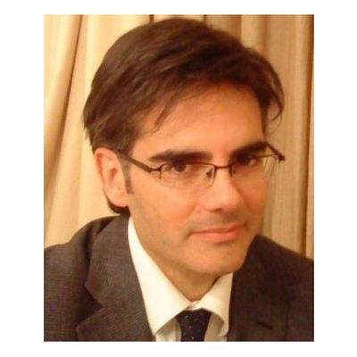
Assoc. Professor, Univ. of Zaragoza
Antonio Lucas-Alba is an Associate Professor at the University of Zaragoza, Spain. He studied Psychology at the University of Valencia, where he also obtained his Ph.D. with a work entitled 'Social Psychology of Traffic: from the individual driver to the interaction between drivers'. He applies behavioural and cognitive science perspectives to Active Inference.
Software & Research Engineer
Arun Niranjan is a senior individual contributor with over a decade of experience in software engineering, data science, and artificial intelligence. He is a Software and Research Engineer, and former Ph.D. student at UCL Centre for Advanced Biomedical Imaging, bringing deep technical expertise to the intersection of AI and biomedical research.
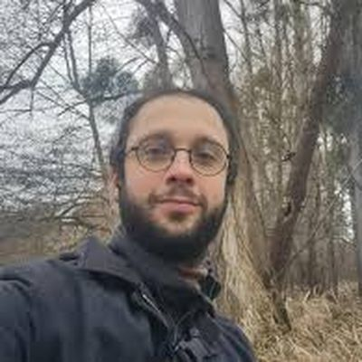
Ph.D. Researcher, Univ. of Sussex
Avel Guenin-Carlut is a Ph.D. student in cognitive science at the University of Sussex, focusing on the co-evolution of the human mind and material culture through the XSCAPE project. He works on developing a radically integrated understanding of life, cognition, and culture under the physics of self-organising systems. He is a research advisor for the Active Inference Institute, Vice-President of the French Society of Cliodynamics, and a founding member of Kairos Research.
avelguenin.github.io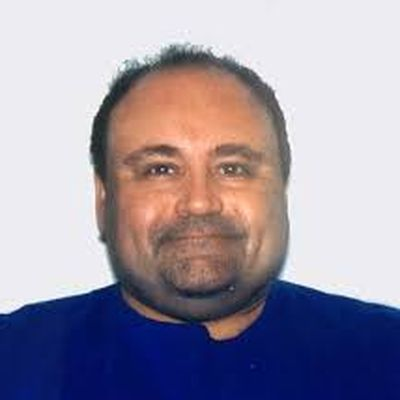
Head Scientist, Orthogonal Research
Bradly Alicea is Head Scientist at the Orthogonal Research and Education Laboratory, Lecturer at the iSchool at UIUC, and Senior Contributor to the OpenWorm Foundation. His interdisciplinary research bridges computational biology, open science, and the development of educational resources connecting complex systems and Active Inference.
Cofounder & CEO, Noumenal
Candice Pattisapu is Cofounder and CEO of Noumenal, an applied AI company developing data-compressed world modelling for thermodynamic computing. An expert in cognitive science and Bayesian modelling, her work on episodic memory and emotional state inference drives Noumenal's approach to next-generation AI systems grounded in Active Inference.
noumenal.ai · Google Scholar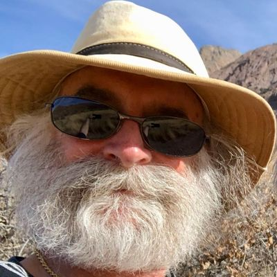
Independent Researcher
Chris Fields is an independent researcher working at the intersection of quantum information theory, the Free Energy Principle, and the philosophy of physics. His prolific academic output includes work on scale-free formalisation of physical systems as observers, non-causal information flow in evolution, and the complementarity between objects and processes, frequently in collaboration with Karl Friston and Michael Levin.
chrisfieldsresearch.com · Google Scholar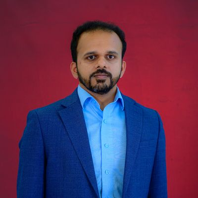
Assistant Professor, WPI
Christo Kurisummoottil is a tenure-track Assistant Professor in Electrical and Computer Engineering at Worcester Polytechnic Institute, where he leads the TRAIN Lab. His research advances interdisciplinary work at the intersection of next-generation AI and wireless systems, with particular focus on approximate Bayesian inference techniques and the mathematical foundations of cognitive and reasoning-driven AI architectures.
wpi.edu/~cthomas2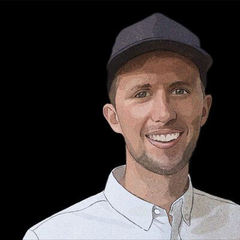
Writer & Researcher
Cory Slater is a writer and researcher exploring the applications and implications of Active Inference across cognitive science and complex systems. He contributes to the Institute's educational mission through accessible science communication and public engagement.
MediumAssistant Professor, UT Austin
Elliott Hauser is an Assistant Professor at the University of Texas at Austin School of Information and co-founder of coding education company Trinket. His research interests span information science, educational technology, and the computational foundations of learning and knowledge systems.
elliotthauser.comResearcher
Haris Neophytou is a researcher contributing to Active Inference and computational neuroscience, with published work spanning probabilistic modelling and adaptive systems.
Google Scholar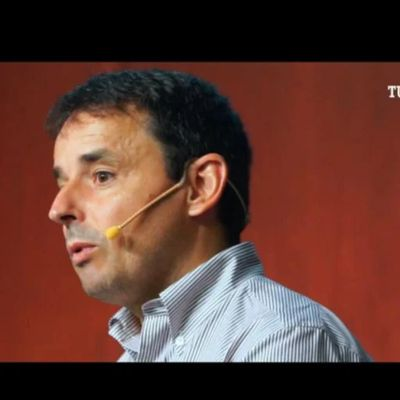
Researcher
Hector Manrique investigates the cognitive requirements necessary for the blending of reality among different potential spheres. He applies Active Inference under the Free Energy Principle to offer new perspectives and approaches to classical evolutionary developmental biology (Evo Devo) problems.
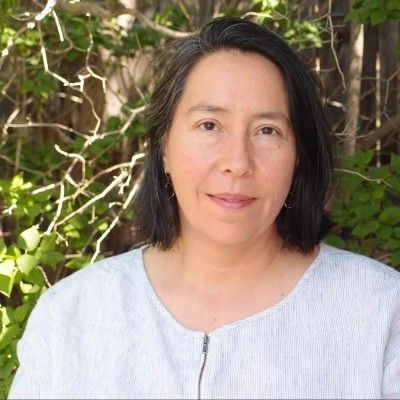
ML & Blockchain Engineer
Holly Grimm is a Machine Learning and Blockchain Engineer with over 25 years of development experience in decentralised AI, blockchain, and ML solutions. She has built a variety of machine learning models for image, music, voice, and text generation, and is active across regenerative finance, indigenous knowledge systems, and decentralised autonomous organisations.
Lecturer, Therapist & Researcher
Ian Tennant is a lecturer, therapist, researcher, wellbeing consultant, and author dedicated to translating the science of human and planetary health into everyday action. His work bridges Active Inference with applied wellbeing practice and public understanding of adaptive systems.
Designer, Artist & Technologist
Jana Lumi is a designer, artist, and technologist whose direction is towards a technology-mediated future where people and planet coexist through collective commons and shared responsibility. Their design work explores textures, systems thinking, 3D modelling, and digital experiments, distilling complex global problems into local relationships and movements.
Serial Entrepreneur
Joel Dietz is a serial entrepreneur and intellectual historian who helped found several key initiatives in the cryptocurrency space, including Ethereum and MetaMask. His research interests focus on the confluence of blockchain network topologies and swarm intelligence, and how the principles undergirding decentralised organisations can be used to fuel global innovation.
Researcher, MIT Media Lab
John Clippinger is a researcher at the CityScience Group at the MIT Media Lab, focused on the design and modelling of mutualistic micro-monetary mechanisms for sustainable and equitable urban ecologies. His career-long interest in complex self-organising systems has spanned positions at the Santa Fe Institute, Harvard, and the World Economic Forum.
University College London
Karl Friston is a theoretical neuroscientist and authority on brain imaging at University College London. He invented statistical parametric mapping (SPM), voxel-based morphometry (VBM), and dynamic causal modelling (DCM). His main contribution to theoretical neurobiology is the Free Energy Principle for action and perception — Active Inference — providing the intellectual foundation upon which the Institute is built. He is a Fellow of the Royal Society and recipient of numerous awards including the Glass Brain lifetime achievement award.
UCL · VERSES AI · Google ScholarAsst. Professor, Univ. of Twente
Luca M. Possati is a Tenured Assistant Professor at the University of Twente, specialising in human-technology interaction. He also holds a senior researcher position with the international research programme Ethics of Socially Disruptive Technologies (ESDiT). His methodological approach integrates insights from cognitive sciences, neuropsychoanalysis, design studies, and actor-network theory. He is the author of 'The Algorithmic Unconscious: How Psychoanalysis Helps in Understanding AI' (Routledge, 2021).
lucapossati.comResearcher
Mahault Albarracin is a researcher in Active Inference and computational social cognition, with published work on cultural evolution, epistemic communities, and the application of the Free Energy Principle to social and collective systems. She contributes to advancing both the theoretical and applied dimensions of Active Inference.
Google ScholarCEO, ThoughtForge AI
Matt Brown is CEO and technical innovator behind ThoughtForge AI, with over two decades of experience in artificial intelligence. His expertise is rooted in developing AI for game franchises including Halo, Bioshock, and Splinter Cell. He pioneered the world's first production-grade deep reinforcement learning platform at Bonsai AI, acquired by Microsoft in 2018. He is a guest lecturer and board member at the Active Inference Institute, with degrees from MIT and the University of Pennsylvania.
thoughtforge.ai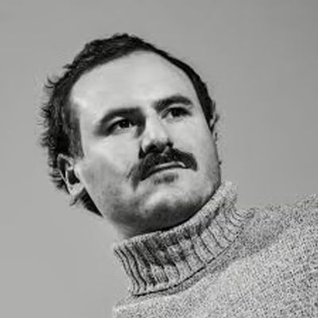
CSO, Noumenal
Maxwell Ramstead is Cofounder and Chief Science Officer at Noumenal. A leading authority on Active Inference and the Free Energy Principle, he shapes Noumenal's theoretical and applied R&D, translating complex thermodynamic AI concepts into practical systems.
noumenal.ai · Google Scholar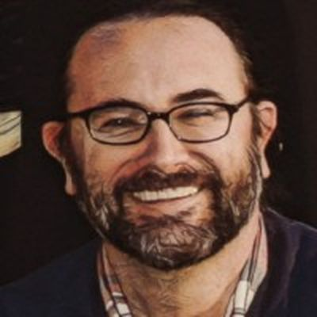
Technologist & Economist
Michael Lennon is a former IBM, PwC, and World Bank technologist and economist with deep experience assisting organisations and communities to innovate and transform their systems, management practices, and people. He specialises in activating collective intelligence through action learning sprints, transforming uncertainty and adversity into mutualism, adaptation, and renewal.
LinkedInSenior Lecturer, Univ. of Sheffield
Dr Michael Smith works at the intersection of insect behavioural ecology and computer science at the University of Sheffield, developing methods to track flying insect location and behaviour using tags and machine learning. His previous work spans differential privacy, Gaussian process methods, and computational neuroscience, with a Ph.D. from Edinburgh examining self-motion cue processing in the human brain using fMRI.
sheffield.ac.ukExecutive Director, UW APL
Scott David is Executive Director of the Information Risk and Synthetic Intelligence Research Initiative at the University of Washington Applied Physics Laboratory. His work addresses the governance and risk dimensions of emerging AI and synthetic intelligence systems.
LinkedInEpigenetics Researcher
Sebastian Alvarado completed his Ph.D. at McGill University and was an A.P. Giannini Fellow at Stanford University. He is interested in how plastic molecular substrates can shape a genome to dynamic changes in the environment. Outside of his research programme, he consults for the entertainment sector with Thwacke and writes science fiction.
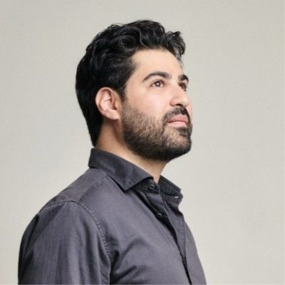
CEO, Holonym
Shady El Damaty, Ph.D., is CEO and co-founder at Holonym, a zero-knowledge identity protocol for producing private proofs of verified credentials, and founded OpSci, a non-profit developing tooling for web-native open science practice. He has a Ph.D. in neuroscience with expertise in MR pulse sequence development and ML/AI for neural signal processing, and was awarded a 2023 Foresight Fellow.
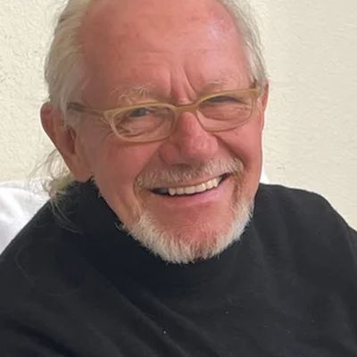
Chief Scientist, CrowdSmart
Dr Thomas Kehler is Chief Scientist and Co-Founder at CrowdSmart, developing AI systems that enhance collective intelligence and creative collaboration. With over 50 years of experience in artificial intelligence, his career spans leadership as CEO of IntelliCorp, the first AI company to go public. He holds a Ph.D. in applied physics from Drexel University and four patents in AI technology for amplifying human intelligence.
thomaskehler.com